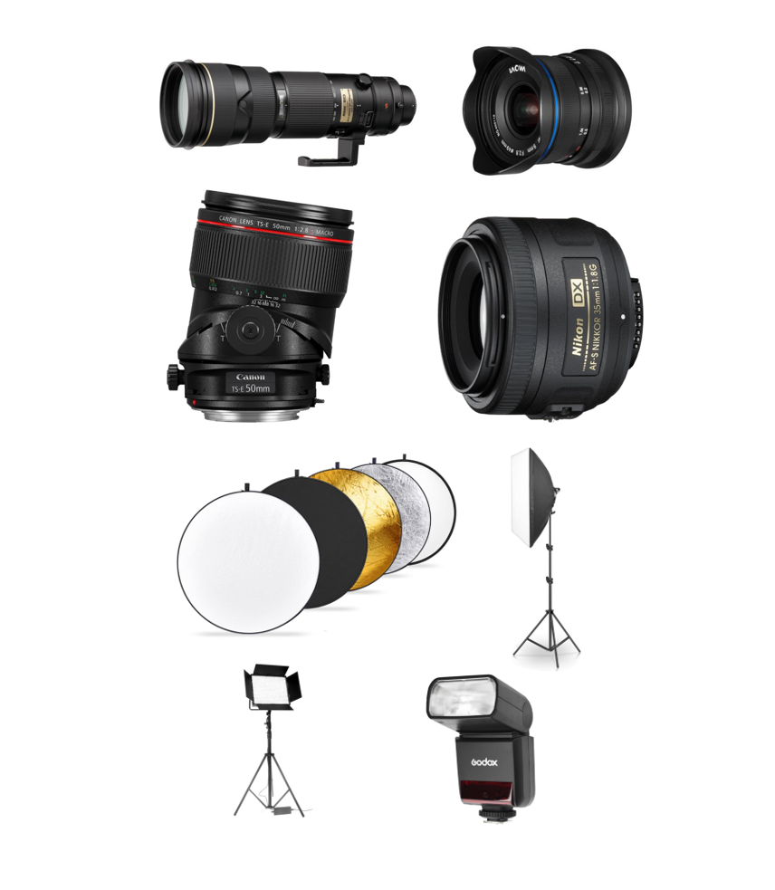
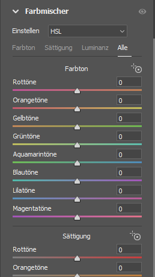

Konzeption
Trello
Trello ist ein Online-Tool, welches
Projektmanagement erleichtert.
In Trello kann man verschiedene Listen und Tags erstellen, in unserem Fall hatte es in einer Vorlage die vier
Listen Inspiration, to-do, doing und done. Es empfiehlt sich einzelne Beiträge mit
Aufgaben und Inspirationen zu erstellen und diese in die entsprechenden Listen einzufügen.
Für die Aufgaben kann man «Name»-Tags erstellen, damit klar wird, wer wann woran arbeitet kann man die
einzelnen Beiträge via. Drag and drop zwischen den Listen verschieben.
Callsheet
Das Callsheet dient dazu alle wichtigen Informationen eines Projektes
festzuhalten. Man schreibt genau auf welches Equipment man für welchen Shot benötigt,
wo die Shots aufgenommen werden, mit genauer Adresse, die Telefonnummer und Rolle jedes Beteiligten und ein
genauer Zeitplan.
Damit jeder weiss wann er wo womit sein soll, und wie man jemanden erreichen kann.
Es empfiehlt sich genügend Zeit für das Callsheet zunehmen, damit es bei dem Projekt zu weniger
Schwierigkeiten kommt. Vorlage Callsheet
Moodboard
Ein Moodboard ist eine Ansammlung von Posen, Locations, einem gewissen Stil und so weiter, welche als
Inspiration für das Projekt dienen, sie sollen beim Betrachter gewisse Emotionen auslösen, welche man selbst
auch mit dem eigenen Projekt auslösen will. Oft nimmt man das Moodboard mit zu den Shoots und lässt sich auch
dann noch davon inspirieren.Man kann Moodboards mit Adobe Spark und Photoshop erstellt.
Kamera & Licht
Virtual Lightning Studio
Mit einem online Tool (Virtual Lightning
Studio) konnten wir verschiedene
Lichtsettings simulieren und bearbeiten. Dort gibt es viele Möglichkeiten, virtuelle Scheinwerfer zu
platzieren. Dazu kann man auch noch verschiedene Filter für die Scheinwerfer ausprobieren. z.B Farbfilter.
Diese simulierten Scheinwerfer kann man auch vor und zurück schieben, um die Einwirkung des Lichtes auf
verschiedene Distanzen zu beobachten.
Kamera Equipment

Folgende Dinge sollten man immer dabeihaben:
Eine Kamera
Ein Stativ: Für Portraitfotos oder Gebäudeaufnahmen.
Mehrere Akkus: Akkus vor und nach dem Shooting aufladen.
Teleobjektiv: Kommt vor allem zum Einsatz, wenn der Fotograf nicht näher an sein Motiv herankommen
kann. Das
ist zum Beispiel in der Natur der Fall, aber auch bei Sportveranstaltungen und anderen
Gelegenheiten.
Weitwinkelobjektiv: Weitwinkelobjektive sind überall da sehr beliebt, wo möglichst viel aufs Bild
kommen
soll , zum Beispiel in der Architekturfotografie. Für die Darstellung opulenter Gebäude benötigt
man kurze Brennweiten, um diese passend inszenieren zu können.
Tilt-und-Shift-Objektiv: Wird häufig für die Architekturfotografie und Produktfotografie
verwendet.
Objektiv mit Festbrennweite: Festbrennweiten werden vor allem verwendet, wenn je nach Situation
spezifische
und charakteristische Bildwirkungen der Bildausschnitte erreicht werden sollen. Aufgrund ihrer größeren
möglichen Blendenöffnung kann mit Festbrennweiten mit hoher Lichtstärke eine geringere Schärfentiefe im
Bild erzeugt werden.
Einen Reflektor: Wird häufig verwendet, um Schatten zu entfernen oder weicher zu machen.
Scheinwerfer
Softboxen
Blitze
Allgemeine Kameraeinstellungen
Zusammenfassung
Im linken Bild wird eine Zusammenfassung aller Kameraeinstellungen gezeigt. Weitere Informationen können den
folgenden Texten entnommen werden. Oder direkt mit dem Canon
Play ausprobiert werden.
Belichtungszeit (Shutter)
Die Belichtungszeit gibt an wie lange das Licht auf den Sensor scheint. Es wird als Sekundenbruchteil
angegeben z.B. 1/80 Sekunde. Eine Langsame Verschlusszeit führt zu viel Bewegungsunschärfe und einem
helleren
Bild. Falls man mit einer langen Verschlusszeit arbeiten will muss zwingend mit einem Stativ arbeiten wobei
sich hierzu empfiehlt, den Selbstauslöser zu benutzten da sich die Kamera beim Knopfdruck noch ein kleines
bisschen verschieben kann.
Blende (Aperture)
Durch die Blendenzahl wird reguliert, wie gross die Öffnung für das Licht ist. Eine kleine Blende (f/2.8)
resultiert in einer grossen Öffnung was zu viel Licht Einfall führt wodurch wiederum das Bild heller wird.
Durch die Öffnung wird ebenfalls die Schärfentiefe reguliert, so ergibt also eine weit geöffnete Blende eine
kleine Tiefenschärfe (nur ein kleiner Teil des Bildes ist scharf)
Lichtempfindlichkeit (ISO)
Die ISO-Werte stellen eine Standardisierung der Lichtempfindlichkeit dar. Mit ihnen wird angegeben wie viel
Licht vom Kamera Sensor aufgenommen wird. Ein tiefer Wert für zu einem dunkeln Bild ein hoher zu einem
hellen.
Man sollte versuchen immer mit ISO 100 zu fotografieren da mit höheren Werten Bildrauschen erkennbar wird,
dies kann aber auch durch die Wärme der Kamera verschlimmert werden.
Brennweite (Focal Length)
Die Brennweite wird in Millimetern angegeben welche den Abstand zwischen Sensor und Linse Beschreiben. Ein
Objektiv mit grosser Brennweite wird Teleobjektiv genannt, eines mit einer kleinen, Weitwinkel. Die
«Normale»
Brennweite hängt von der grösse des Sensors ab.
Adobe
Adobe Bridge
Die wichtigsten Funktionen für den Workflow in einem Fotografie Projekt sind die Stapel-Umbenennung,
welche immer beim Projektstart vorgenommen werden sollte und das Bewerten von Bildern in Adobe Bridge.
Die Stapel-Umbenennung findet man ganz oben unter Werkzeugen oder mit Strg+Umsch+R. Eine Sinnvolle Benennung sieht man auf dem Beispiel links.
Durch die Bewertungsfunktion (Sterne), welche unter den Bildern angezeigt wird, kann die Bildauswahl erleichtert werden. Eine sinnvolle Nutzung dieser Funktion wäre das man zuerst allen Bildern, die man gut findet, einen Stern gibt dann diese auswählt und dann aus diesen den guten Bildern zwei Sterne gibt und so weiter.
Mit der Filter Funktion kann man dann nach den ausgewählten Bildern filtern in dem man die übereinstimmende Sterne Bewertung auswählt. Des Weiteren kann man nach Dateiendungen, Stichwörter, Verfasser, Erstelldatum, Datum/Uhrzeit des Orginals und nach dem Änderungdatum sortieren.
Die Stapel-Umbenennung findet man ganz oben unter Werkzeugen oder mit Strg+Umsch+R. Eine Sinnvolle Benennung sieht man auf dem Beispiel links.
Durch die Bewertungsfunktion (Sterne), welche unter den Bildern angezeigt wird, kann die Bildauswahl erleichtert werden. Eine sinnvolle Nutzung dieser Funktion wäre das man zuerst allen Bildern, die man gut findet, einen Stern gibt dann diese auswählt und dann aus diesen den guten Bildern zwei Sterne gibt und so weiter.
Mit der Filter Funktion kann man dann nach den ausgewählten Bildern filtern in dem man die übereinstimmende Sterne Bewertung auswählt. Des Weiteren kann man nach Dateiendungen, Stichwörter, Verfasser, Erstelldatum, Datum/Uhrzeit des Orginals und nach dem Änderungdatum sortieren.
Camera Raw
Camera Raw öffnen
Camera Raw kann man entweder über Bridge oder Photoshop öffnen.
Bridge
Rechtsklick auf ein Bild;
«Öffnen» öffnet erst Photoshop und dann Camera Raw.
«In Camera Raw öffnen…» öffnet nur Camera Raw.
Photoshop
Sobald man ein RAW-Bild in PS öffnet oder es mit PS öffnet, öffnet sich automatisch das Camera Raw Fenster.
Raw Grundeinstellungen
Durch den Weissabgleich bestimmt man die Farbtemperatur und den Farbton.
Dafür nutzt man die Pipette, indem man mit ihr auf eine normal belichtete weisse Fläche im Bild klickt.
Idealerweise besitzt man ein Referenzbild mit Spydercube.
Mit den anderen Schiebereglern kann man bestimmte Punkte ändern, z.B. die Tiefen heller oder dunkler.
Was welcher Regler genau macht und wie sie zusammenarbeiten
hier.
Statt mit Kontrast zu arbeiten, empfiehlt es sich mit «Struktur», «Klarheit» und «Dunst entfernen» zu
arbeiten.
Raw Farbmischer

Mit dem Farbmischer kann man bestimmte Farben eines Bildes ansprechen und sie
dementsprechend verändern. Indem man sie satter macht oder den Farbton differenziert oder die Luminanz der
Farbe anpasst.
Raw Optik
Chromatische Aberration entfernen
Farbränder um Objektive herum entfernen. (Die entstehen, wenn das Licht eine unterschiedliche Wellenlänge
hat
oder die Farbe verschieden stark gebrochen wird, meistens Magenta oder Cyan farbig.)
Pofilkorrekturen
Erkennt meistens automatisch mit der Adobe-Datenbank, welches Objektiv verwendet wurde, und passt es
automatisch an, da jedes Objektiv etwas anders fotografiert.
Manuell Hier kann man «verzerren» (Fish-Eye) und «vignettieren», das ist allerdings mit
Vorsicht
zu
geniessen.
Raw Geometrie
«Vertikal» und «Horizontal»
Bild wird an imaginärer X-/ Y-Achse gedreht.
Nützlich, um bei Architektur-Fotos grob schiefe Linien schonmal etwas gerader zu machen.
Drehen
Bild wird im Uhrzeigersinn (Regler links) oder gegen den Uhrzeigersinn (Regler rechts) gedreht.
Zuschnitt beschränken
Schneidet automatisch die Bildinhalte weg, die z.B. durch Schwenken transparent werden.
Raw Pinsel
Mit dem Pinsel kann man bestimmte Bereiche des Bildes individuell vom Rest
bearbeiten.
Beim ersten Klicken mit dem Pinsel auf das Bild, wird ein roter Ankerpunkt gesetzt. Löscht man diesen,
werden
alle Pinselstriche gelöscht.
Im Menü findet man alle Einstellungen die man für den ausgewählten Bereich einstellen kann.
Mit Farbe kann man sich anzeigen lassen, wo man schon überall mit dem Pinsel gemalt hat.
Raw Schnappschüsse & Vorgaben
Mit beiden kann man die Einstellungen die man für dieses Bild in RAW gemacht
als
Vorlage speichern.
Schnappschuss
Speichert eine Version der Bearbeitung nur für das aktuelle Bild. Nützlich um verschiedene Versionen
auszuprobieren.
Vorgaben
Speichert eine Version der Bearbeitung in Camera Raw selbst. Die kann dann auch für andere RAW-Bilder
verwendet werden.
Raw Histogramm
Im Histogramm sieht man die Tiefen, Lichter, Schwarz, Weiss und die Belichtung.
Passt man diese Einstellungen in Camera Raw an, verändert sich das Histogramm.
Aktiviert man die Dreiecke, werden einem unterbelichtete Bereiche im Bild blau angezeigt und überbelichtete
rot.
Raw in DNG-Format konvertieren
Um Bilder ins DNG-Format zu konvertieren, wählt man in Camera Raw alle Bilder, an die man konvertieren will
und klickt dann auf das Symbol. Dann öffnet sich ein Fenster, bei dem wichtig ist das man «Kameradatei
einbetten» aktiviert, so wird die XMP-Datei, die bei RAW-Bearbeitungen entsteht, eingebettet.
Einstellungen Synchronisieren
Um die Camera Raw-Änderungen von einem Bild auf ein anderes zu übertragen, wählt man das Quellbild mit
Linksklick an, die Bilder auf welche die Einstellungen übertragen werden sollen mit Shift. Dann Rechtsklick
und
auf «Einstellungen synchronisieren»
Photoshop
Hintergrund Ebene
Um eine Ebene richtig bearbeiten zu können, muss man sie in eine normale Ebene umwandeln. Dafür kann man
einfach auf das Schloss klicken.
Aktionen
Um das Fenster zu öffnen Fenster > Aktionen.
Mit Aktionen können mehrere Arbeitsschritte mit einem Klick ausgeführt werden.
Plus
Eine neue Aktion erstellt man mit dem Plus.
Erstellt man eine neue Animation, beginnt automatisch die Aufnahme dieser Animation. (Kreis / während
Aufnahme
rot).
Während es läuft, kann man die Arbeitsschritte in PS ausführen, welche man in eine Aktion verpacken will.
Aufnahme beenden
Zum Beenden auf das Quadrat klicken.
Aktion abspielen
Um die Aktion anzuwenden, wählt man sie aus und klickt auf das Play-Zeichen.
Camera-Raw Filter
Zum Öffnen: Filter>Camera Raw-Filter.
Der Camera-Raw-Filter in PS sieht gleich aus wie das richtige Camera-Raw.
Die Range der Anpassungsmöglichkeiten ist aber wesentlich geringer, da das Bild jetzt im JPG-Format ist und
nicht mehr in RAW. Für geringe Anpassungen kann es jedoch ausreichen.
Frei Transformieren
Ctrl. + T /
Bearbeiten>Frei Transformieren
Mit diesem Tool kann man das Bild unproportional in alle Richtungen ziehen. Z.B. Kann dies bei
Architekturaufnahmen, um Linien gerade zu machen sehr nützlich sein.
Um das Bild grösser ziehen kann man einfach an den Ecken ziehen.
Unproportional ziehen
Ctrl. gedrückt halten während man zieht.
Wichtig: Bei Architekturaufnahmen auch mit Shift nach unten ziehen damit es nicht zu flach wirkt.
Für Print speichern
Um ein Bild für Print zu speichern nutzt man «Speichern unter».
Wichtig ist das man das Farbprofil einbettet («ICC-Profil:…»)
(Im Explorer-Fenster unten rechts).
Ausserdem als Dateiformat JPG wählen. (Nur JPG, nicht z.b JPG 2000/Stereo)
Ausserdem die Qualität auf maximal stellen.
Für Web speichern
1.
Bildgrösse anpassen.
(Ctrl. + Alt. + I)
Empfohlen sind für die längere Seite 2000-2500px
2.
Dann auf Datei>Exportieren>
Für Web speichern.
Hier stellt man die Qualität auf Hoch.
Die Ladezeit (unten links) so hoch wie möglich.
Bildanalyse
Für die einfache Analyse der Fotografie schauen wir auf die Organisation der Bildfläche. z.B.
Gibt es Achsen, Linien, Kurven, Teilflächen, die die Bildfläche gliedern?
Kann man eine bestimmte Lichtführung entdecken?
Lassen sich Ordnungsprinzipien, bestimmte Rhythmen oder Kompositionsmuster ausmachen?
Wie wird der Blick geführt?
Welche Wirkungen gehen aus von dieser Ordnung der Fläche? (Symmetrie, Ruhe, Ordnung, Aufgeräumtheit,
Festigkeit Balance, Unbewegtheit, Statik, Langeweile, Bewegung, Streuung, Dynamik, Verdichtung, Unruhe,
Spannung, Dramatik…)
Hier wird alles noch einmal erklärt: https://harald-schirmer.de/fotografie/foto-analyse-bewertung/
Dateienhandling
Eine saubere Ordner-Struktur ist sehr wichtig bei einem Projekt mit vielen Dateien. Bei einem Fotoprojekt
eignet sich ein Projekt Ordner mit den Unterordnern: 01 Input , 02 Retusche, 03 Output.
Bei Bedarf können auch noch weitere Unterordner erstellt werden z.B. print und web im Ordner Output. In den
Input Ordner kommen sowohl Raw als auch DNG-Dateien, während in den Retusche Ordner nur
Photoshop(psd)-Dateien dürfen.